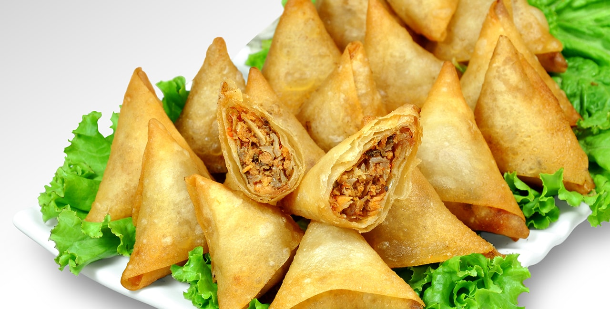
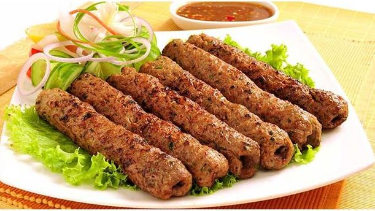
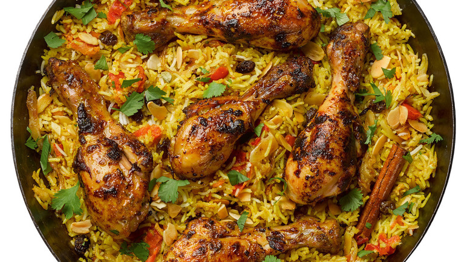
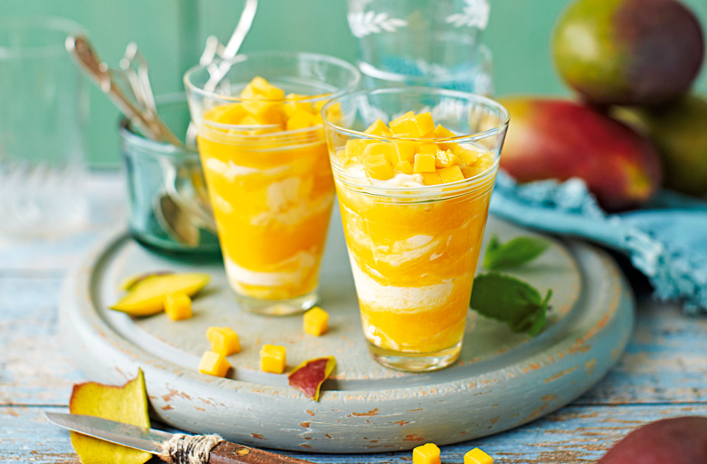
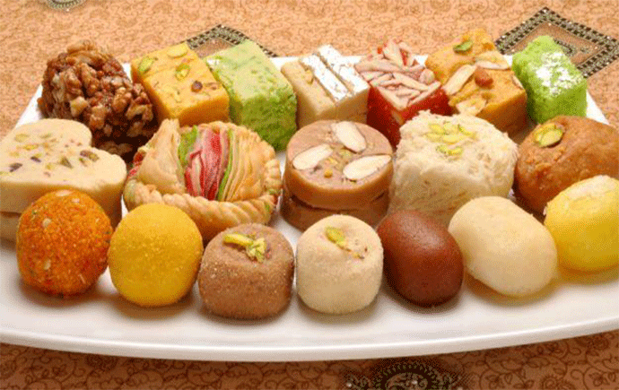

Indian Food.

The traditional food of India has been widely appreciated for its fabulous use of herbs and spices. Indian cuisine is known for its large assortment of dishes. The cooking style varies from region to region and is largely divided into South Indian & North Indian cuisine. India is quite famous for its diverse multi cuisine available in a large number of restaurants and hotel resorts, which is reminiscent of unity in diversity. The staple food in India includes wheat, rice and pulses with chana (Bengal Gram) being the most important one. In modern times Indian pallete has undergone a lot of change. In the last decade, as a result of globalisation, a lot of Indians have travelled to different parts of the world and vice versa there has been a massive influx of people of different nationalities in India. This has resulted in Indianisation of various international cuisines. Nowadays, in big metro cities one can find specialised food joints of international cuisines. To know more about the Indian traditional food, read on.
1. Samosa.

Samosa is the most common appetizer that you can can find at almost all Indian restaurants. A samosa is a fried or baked pastry with a savoury filling, such as spiced potatoes, onions, peas, lentils, macaroni, noodles, and/or minced meat (lamb, beef or chicken).Pine nuts can also be added. The samosa is claimed to have originated in Central Asia. Its size and consistency may vary, but typically it is distinctly triangular or tetrahedral in shape. Indian samosas are usually vegetarian, and often accompanied by a mint sauce (raita) or chutney. Vegetarian samosas originated in Uttar Pradesh. Samosas are a popular entrée, appetizer or snack in the local cuisines of the Indian subcontinent, Southeast Asia, Central Asia, Southwest Asia, the Arabian Peninsula, the Mediterranean, the Horn of Africa, East Africa and North Africa. Due to cultural diffusion and emigration from these areas, samosas in today's world are also prepared in other regions.
2. Shish kebab.

Shish kebab or Seekh kebab is a popular meal of skewered and grilled cubes of meat.It is similar to a dish called shashlik, which is found in the Caucasus region. It is generally made of lamb, but there are also versions with beef or veal and chicken meat. A South Asian variation of shish kebab is prepared with minced meat with spices and grilled on skewers. It is cooked in a Tandoor, and is often served with chutneys or mint sauce. It is often included in tandoori sampler platters, which contain a variety of tandoor cooked dishes. A seekh kebab can also be served in a naan bread much like döner kebab. While shish kebabs are sometimes referred to in English as simply kebabs, that term can also refer to a wide variety of different grilled meat dishes.
3. Biryani.

Biryani is flavoured rice with lot of meat or egg or vegetables. The main ingredients of biryani are rice, spices, herbs, vegetables and non vegetarian products.There are many version of biryani and each version gets separated by each other because their are no set of standard recipe in Indian cuisine. The method of making biryani include layering or Dum or steam pressure etc. The most common rice variety used is Basmati which is a long grain rice. The spices includes saffron, nutmeg, mace, pepper, cloves, cardamom, cinnamon, turmeric, bay leaves, coriander, mint leaves, ginger, allspices, star anise, onions, garlic etc . Some uses papaya, yoghurt, white pepper, rock salt for tendering the meat. Boiled egg is also used by some of the biryani versions. Making a biryani is a art in itself. Each rice grain should have the flavours of all the ingredients, that's the main idea of biryani.
4. Lassi.

Lassi is a popular traditional yogurt-based drink from the Indian Subcontinent that originated in the Indian subcontinent. Lassi is a blend of yogurt, water, spices and sometimes fruit. Traditional lassi (a.k.a., "salted lassi", or simply "lassi") is a savoury drink, sometimes flavoured with ground and roasted cumin. Sweet lassi, however, contains sugar or fruits, instead of spices. Salted mint lassi is highly favoured in Bangladesh. The most popular kind of lass that is gaining popularity worldwide is the Mango lassi. It is made from yogurt, milk and mango pulp. It may be made with or without added sugar. It is widely available in the UK, Malaysia, Singapore, the United States, and in many other parts of the world. In various parts of Canada, mango lassi is a cold drink consisting of sweetened kesar mango pulp mixed with yogurt, cream, or ice cream. It is served in a tall glass with a straw, often with ground pistachio nuts sprinkled on top
5. Mishti Sweet.

Eastern India known as West Bengal, which is known for its rich culture. Bengali ' bhadralok ' are a sophisticated lot who have always romanced the finer things in life, be it literature or films, music or cuisine. Amongst other things like Tagore and Victoria Memorial, Bongs take immense pride in their large selection of delectable mishti. It comes in wide varaity made commonly with milk, cheese, sugar, peanuts and ghee. Sweetmeats not only form an integral part of the amazing Bengali cuisine, but are popular with people of all ages, across the country. When it comes to Bengali sweets, whether you have a sweet tooth or not hardly matters. One look at these enticing babies will melt your heart and your taste buds!